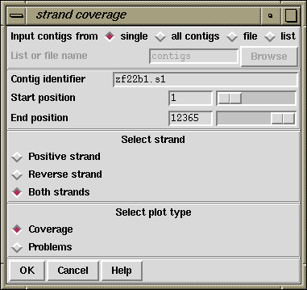

This option can be invoked from the main gap4 View menu, in which case it appears as a single plot, or from the View menu of the Consistency Display in which case it will appear as part of the Consistency Display.
The display is used to show which regions of the data are covered by readings from each of the two strands of the DNA. A separate line is drawn for each strand: forward in red and reverse in black. The function works in two complementary modes: it can plot the positions which are covered, or the positions which are not. The latter is probably the most useful as it directs users to the places requiring further data.
The figure below shows the covered positions, and the figure below that shows the uncovered positions for the same contig.
The plot can be regarded as a coarse version of the Quality Plot
(see section Quality Plot),
in that it shows the strand coverage using the Quality Calculation
(see section The Quality Calculation),
but does not reveal problems with individual base positions.

The dialogue allows user to select the contig(s) and strands to analyse
and whether to plot Coverage or Problems.
![[picture]](strand_coverage_p1,5.95in.png.html)
(Click for full size image)
![[picture]](strand_coverage_p2,5.95in.png.html)
(Click for full size image)
Last generated on 25 April 2016.